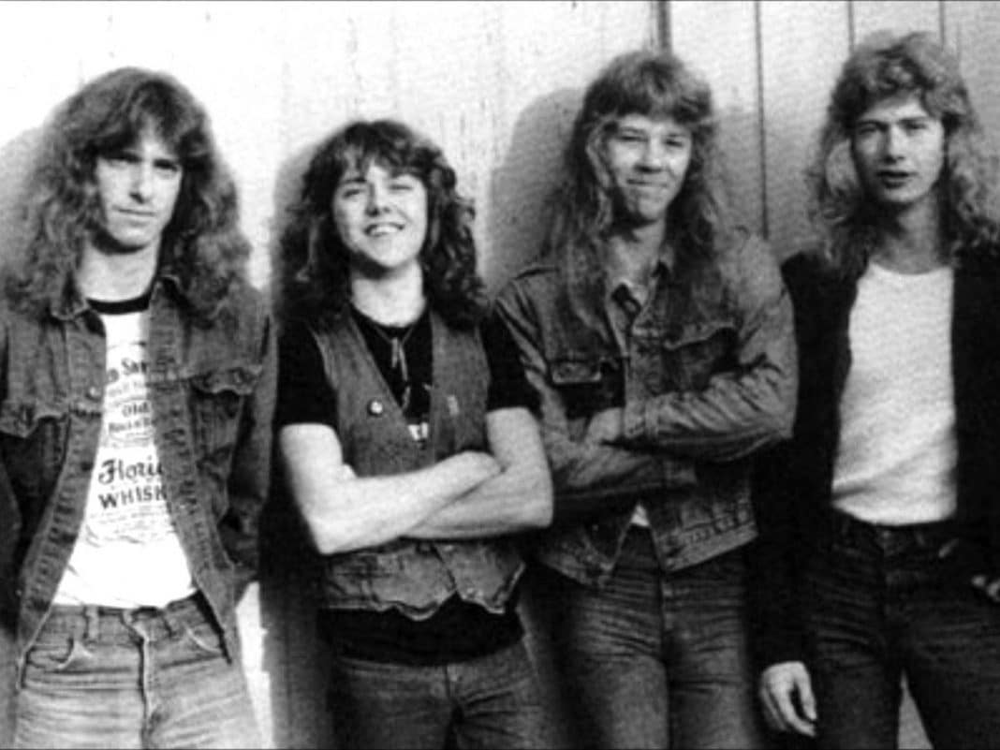
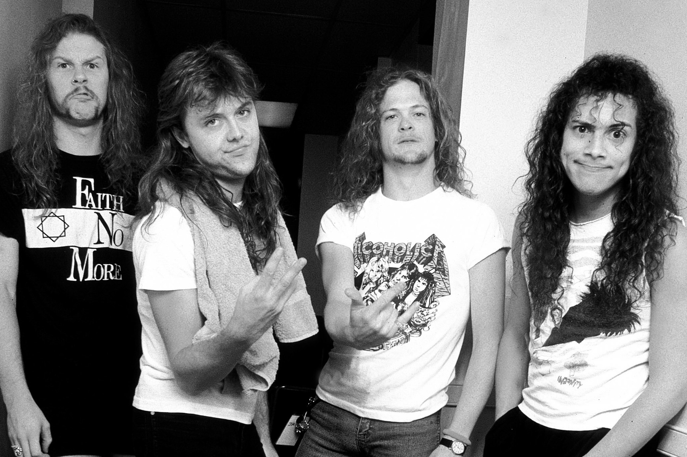
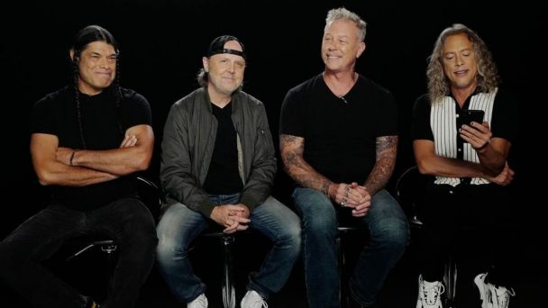

¿QUIENES SON?
Metallica es una banda estadounidense de thrash metal1 originaria de Los Ángeles, pero con base en San Francisco desde febrero de 1983. Fue fundada en 1981 en Los Ángeles por Lars Ulrich y James Hetfield, a los que se les unirían Dave Mustaine y Ron McGovney. Estos dos músicos fueron después sustituidos por el guitarrista Kirk Hammett y el bajista Cliff Burton respectivamente, Dave Mustaine fue despedido un año después de ingresar en la banda debido a su excesiva adicción al alcohol y su actitud violenta, siendo sustituido por Kirk Hammett (exguitarrista de Exodus). Ron renuncia a la banda debido al mal comportamiento de Dave Mustaine, el cual era violento y problemático cuando estaba bajo el efecto del alcohol. El colmo fue cuando Mustaine mojó el bajo de Ron con cerveza, él sin saberlo lo conectó, recibiendo una descarga eléctrica. Es entonces, tras contactar con Cliff Burton que la banda se traslada a San Francisco. (Cabe resaltar que Ron sabía que lo iban a despedir y sustituir por Cliff Burton). Por otra parte, el 27 de septiembre de 1986, fue la muerte de Cliff Burton en un accidente de autobús en Suecia, durante una de sus giras, esto provocó la entrada al grupo de Jason Newsted,2 quien, tras su abandono quince años más tarde, sería sustituido por el bajista actual, Robert Trujillo.

segunda formacion de metallica con dave mustaine y cliff burton (1983)

metallica con kirk hammet y el bajista jason newsted (1990)

metallica en la actualidad con el bajista robert trujillo (2021)